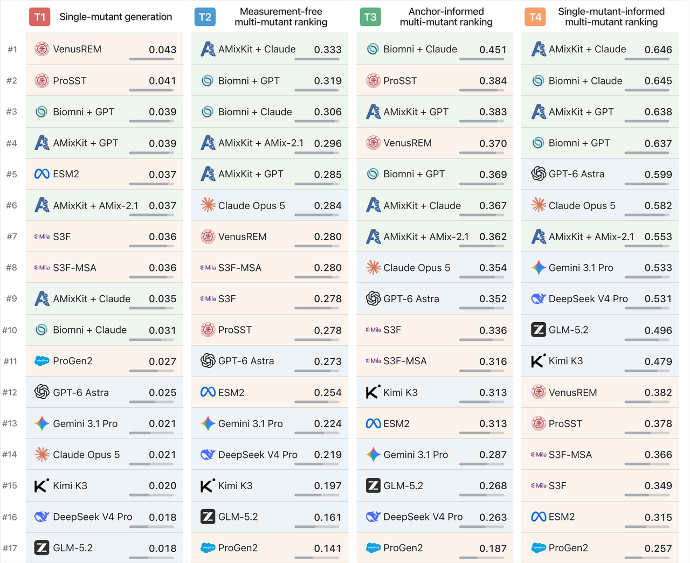
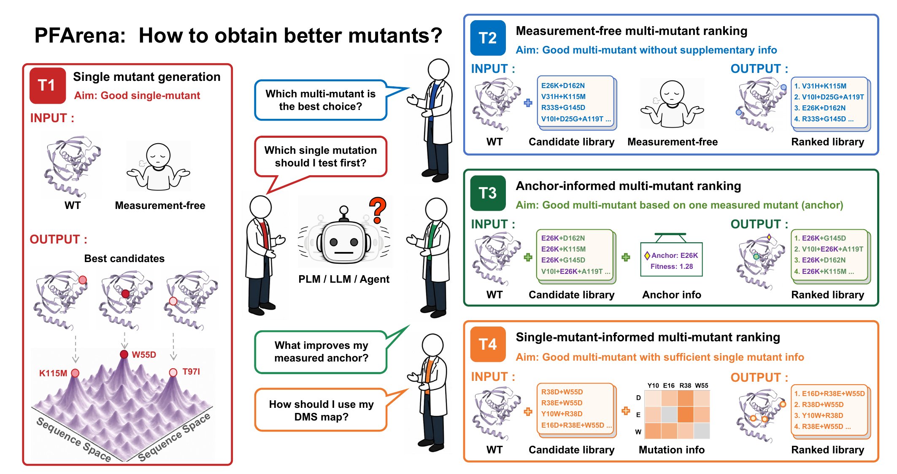
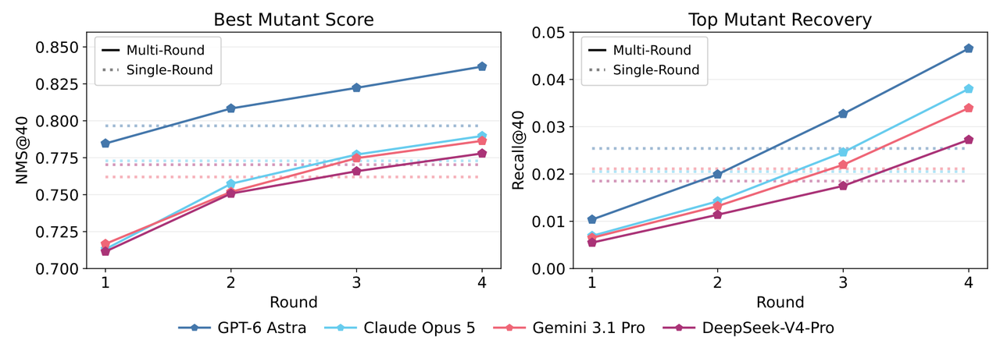
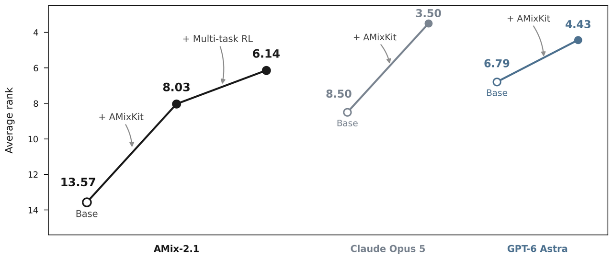

Overview
From solving challenging mathematical problems to conducting real-world scientific experiments, large language models (LLMs) are pushing the boundaries of AI-driven scientific discovery. In the life sciences, frontier models have also achieved remarkable breakthroughs. Anthropic used Claude Opus 4.8 and Mythos Preview to power protein design agents, successfully generating wet-lab-validated protein binders for 14 out of 15 targets. OpenAI has progressed from optimizing cellular reprogramming factors with GPT-4b micro to its recent acquisition of Orchestra Bio, advancing AI from biomolecular prediction and design toward real-world experiments and end-to-end drug development. Google DeepMind used Gemini 4 Argon to design five novel enzymes with experimentally validated catalytic activity.
These advances are exciting, but they also raise an important question: Have LLMs truly mastered protein engineering?
Protein engineering involves searching an enormous space of possible mutation combinations to identify proteins with improved activity, stability, or specificity, all under limited experimental budgets. Success in individual experiments does not necessarily mean that models can reliably guide protein engineering in practice. To understand how far LLMs are from real-world applicability, we need to address three progressively challenging questions:
- Do LLMs truly understand proteins? Can they capture the relationships between protein sequences, structures, and functions, and accurately predict the effects of complex mutation combinations?
- Does understanding proteins translate into the ability to guide experiments? Given limited experimental budgets, can models proactively propose promising candidates and leverage existing experimental data to make better decisions?
- Can LLMs continuously improve through experimentation? Can they adapt their search strategies based on successive rounds of experimental feedback and discover increasingly promising variants?
Moving from "understanding proteins" to "understanding experiments" requires models to translate protein knowledge into effective decisions under real-world experimental constraints.
To investigate these questions, Shanghai Artificial Intelligence Laboratory, together with the Institute for AI Industry Research (AIR) and the School of Pharmaceutical Sciences at Tsinghua University, introduces PFArena. Built from data collected across 202 experimental assays, PFArena systematically evaluates the candidate generation, ranking, and experimental evidence utilization capabilities of specialized protein models, general-purpose LLMs, and scientific agents. It further investigates how experimental feedback can improve mutant discovery, revealing both the progress and current limitations of LLMs in protein engineering.
01 Why PFArena? Understanding Proteins Is Not Enough for Reliable Engineering
Most existing protein engineering benchmarks focus on variant effect prediction: given a protein sequence and a mutation, models are asked to predict its fitness or rank a predefined set of candidates. These evaluations are essential for assessing whether models have learned the underlying principles of protein sequences, structures, and evolution. However, they do not fully reflect real-world protein engineering workflows.
Existing benchmarks can assess whether a model "understands proteins," but they do not adequately reveal whether it can "understand experiments." Real-world protein engineering requires more than predicting mutation effects. Models must also make effective decisions at different stages of experimentation. This involves three progressively challenging capabilities:
- Propose candidates from prior knowledge. Leverage existing protein knowledge to proactively identify promising candidates from a vast mutation space.
- Generalize from experimental measurements. Use available mutation measurements to infer the effects of new, untested mutation combinations.
- Continuously optimize through feedback. Adapt search strategies based on successive rounds of experimental feedback to discover better variants.
Together, these capabilities point toward a broader evaluation objective: How well can models engineer proteins in realistic experimental settings?
To address this challenge, PFArena extends evaluation beyond static mutation scoring to candidate generation and ranking under varying experimental information conditions. It aims to establish a unified, reproducible framework for comparing protein language models (PLMs), general-purpose LLMs, and scientific agents.

02 What Does PFArena Do? Turning Real-World Protein Engineering Scenarios Into Benchmark Tasks
To investigate these questions, we introduce PFArena, a language-model benchmark designed around protein engineering decisions. PFArena operationalizes the ability to "understand experiments" through four comparable tasks (T1–T4), covering two fundamental decisions: which mutations to generate and which candidates to prioritize for testing. Each task explicitly defines the information available to the model and the expected outputs.
T1: Single-Mutant Generation. Given a wild-type protein sequence and an experimental objective, the model must propose a limited number of candidates from the complete space of valid single-amino-acid substitutions, without access to target-specific mutation measurements. This evaluates how models initiate exploration.
T2: Multi-Mutant Ranking Without Experimental Evidence. Given a set of multi-mutant candidates without relevant mutation effect measurements, the model must rank them based on zero-shot predictions of their performance.
T3: Anchor-Guided Multi-Mutant Ranking. Given a previously measured mutant and its fitness, the model must rank subsequent mutation combinations built upon that background. This evaluates its ability to leverage an existing experimental anchor.
T4: Single-Mutant-Evidence-Guided Multi-Mutant Ranking. Given experimental measurements of individual mutations involved in candidate combinations, the model must predict their combined performance. This evaluates how effectively single-mutant evidence supports multi-mutant decisions.
Together, these four tasks span the progression from no experimental evidence to increasingly rich target-specific information, reflecting different stages of common laboratory workflows.
PFArena is constructed from experimentally measured protein fitness landscapes, integrating data from ProteinGym, MaveDB, MegaScale, FLAb, Human Domainome, CombinGym, and manually curated deep mutational scanning (DMS) studies.
After standardizing mutation representations, aligning experimental score directions, and applying rigorous quality control, the benchmark comprises 202 independent assays, 293 task instances, and 607,269 target-candidate records, covering experimental objectives such as protein stability, binding, activity, and cellular or organismal function.
The research team systematically evaluated 6 protein language models (PLMs), 6 general-purpose LLMs, and 5 agent configurations built using Biomni and AMixKit. Performance was assessed across multiple dimensions, including overall ranking quality, top-ranked candidate quality, best-candidate discovery, and coverage of high-fitness variants.
Among these tools, AMixKit is a lightweight protein engineering toolkit developed by the team. It enables LLMs to invoke specialized protein analysis tools and integrate external information, supporting multi-step, evidence-grounded reasoning and analysis.

03 How Far Have LLMs Come? The Gap to Reliable Protein Engineering
Three key findings from PFArena highlight both the progress of current AI systems and the boundaries of their capabilities in realistic protein engineering settings.
Finding 1: Limited Budgets and Combinatorial Complexity Challenge Both PLMs and LLMs
In T1, each assay permits only 40 proposed candidates. Even VenusREM, the best-performing model on Recall@40, retrieves just 4.27% of the experimentally top-ranked 40 mutants—fewer than two candidates on average.
Meanwhile, the highest normalized maximum score (NMS@40) reaches 0.7966, compared with 0.7749 for the random baseline. This indicates that finding one reasonably good candidate does not necessarily translate into broad coverage of high-fitness mutations.
Search-space size and combinatorial complexity further constrain model performance. In T1, recall of top-ranked candidates declines as protein sequence length and the corresponding search space increases. Ranking performance declines across PLMs, LLMs, and agents as the number of substitutions increases.
Finding 2: PLMs and LLMs Exhibit Complementary Strengths in Protein Engineering
PFArena reveals that the relative advantages of different modeling approaches depend on both task formulation and the availability of experimental information.
In T1, where no target-specific measurements are provided, specialized PLMs generally outperform other approaches in Top-40 recall. In T4, where single-mutant experimental measurements are available, the advantages of LLMs and agents become more pronounced.
PFArena also reveals distinct mutation preferences across model classes. Successful candidates selected by LLMs tend to favor conservative amino acid substitutions that preserve physicochemical properties, whereas PLMs cover a broader range of substitutions across amino acid categories. Agents generally fall between these two patterns.
These differences are consistent with the distinct priors available to each model class. Sequence, structural, and evolutionary constraints may help PLMs identify compatible substitutions across amino acid categories, while LLM preferences align more closely with general biochemical heuristics that favor preserving physicochemical properties. These patterns reflect different tendencies in how the two model classes select mutations.
Candidate overlap analysis provides further evidence of this complementarity. Across 116 paired assays, candidates jointly selected by VenusREM and GPT-6 Astra achieve a median experimental rank score of 0.79, higher than the scores of candidates selected exclusively by either model (0.66 and 0.67, respectively). The two models can also correct some of each other's most severe ranking errors.
These observations suggest that PLMs and LLMs may capture different but complementary signals: PLMs excel at leveraging protein-specific priors, while LLMs can flexibly integrate task descriptions and experimental information.
Finding 3: Multi-Round Feedback Significantly Improves LLM-Based Mutant Discovery Under the Same Experimental Budget
Real-world protein engineering typically involves multiple rounds of experimentation. Scientists use existing measurements to refine subsequent candidates, progressively searching for better variants. To investigate whether LLMs can improve their decisions through experimental feedback, PFArena conducts multi-round replay evaluations using historical experimental measurements.
Under the same total budget of 40 candidates, we compare single-round generation against a four-round setting with 10 candidates per round. In the multi-round setting, available historical experimental scores for previously proposed candidates are fed back to the model to inform subsequent selections.
The results show that all four evaluated LLMs benefit from multi-round experimental feedback compared with single-round generation. Notably, GPT-6 Astra improves its Recall@40 from 2.54% to 4.65%, while NMS@40 increases from 0.7966 to 0.8367.
These findings point toward a promising direction: the future of protein AI should not depend solely on more accurate single-round predictions. Models should also be capable of continuously improving their decisions by learning from experimental feedback.
Interestingly, improvements are also possible through repeated sampling and aggregation, even without experimental feedback. For DeepSeek-V4-Pro, aggregating 16 samples using Approval Voting improves NMS@40 from an average of 0.7696 to 0.7876, and Recall@40 from 1.86% to 2.22%. However, both metrics remain below those achieved by retrospective selection using ground-truth experimental labels (0.8474 and 4.61%, respectively).
This gap exposes a critical bottleneck: better candidate sets already exist among the sampled outputs, but reliably identifying them without access to experimental ground truth remains an open challenge.

04 From Benchmarking to Practice: Toward Agentic Systems for Protein Engineering
PFArena highlights two complementary capabilities worth combining: the sequence, structural, and evolutionary priors learned by specialized PLMs from large-scale protein datasets, and the ability of LLMs to understand scientific objectives, incorporate experimental evidence, and perform multi-step reasoning.
To explore how these capabilities can work together with specialized computational tools, the team developed AMixKit, a lightweight toolkit for protein engineering. AMixKit enables general-purpose LLMs to invoke protein analysis tools, integrate external information, and perform multi-step reasoning for candidate evaluation and ranking.
Results from PFArena show that agents built on AMixKit achieve leading performance across multiple tasks, demonstrating the potential of tool-augmented approaches for protein engineering decisions.
At the same time, frontier closed-source models still face practical deployment challenges, including inference costs, output reliability, and false refusals on biology-related requests.
To address these challenges, the team is further developing InternLM AMix-2.1, introducing multi-task agentic reinforcement learning at the hundred-billion-parameter scale to jointly enhance domain-specific capabilities and agentic decision-making.
Preliminary evaluations indicate that AMixKit + AMix-2.1 demonstrates strong competitiveness across all four tasks, opening new possibilities for building high-performance, deployable protein engineering agents.
This effort also illustrates another important role of PFArena: a benchmark should do more than measure how far models have progressed. It should help identify capability gaps and guide the design of next-generation models and systems.

05 Conclusion
PFArena demonstrates the progress of protein AI while exposing several key challenges that remain on the path toward autonomous evolution. We see three particularly important directions for future research.
- First, from learning single-mutation effects to understanding complex fitness landscapes. Models must move beyond simple additive assumptions and better capture non-additive effects, predicting the fitness of multi-mutant variants across different sequence backgrounds. These capabilities are essential for extending protein engineering beyond local optimization into much larger search spaces.
- Second, from single-round generation to closed-loop optimization guided by experimental feedback. Future benchmarks should evaluate not only prediction accuracy but also whether models can identify better mutations through iterative decisions under a fixed experimental budget—and quantify the value added by each experimental round.
- Third, from individual models to collaboration between specialized models and scientific agents. The protein-specific priors of PLMs, contextual reasoning capabilities of LLMs, specialized computational tools, and experimental feedback all offer complementary value. A major next step will be to integrate these capabilities into systems that can autonomously formulate hypotheses, select experiments, and adapt their strategies based on observed results.
The progression from understanding proteins to understanding experiments, and ultimately to formulating hypotheses, designing experiments, and revising hypotheses based on evidence, represents an important step in transforming AI from a knowledge tool into a scientific research partner.
PFArena aims to help translate advances in model capabilities into better experimental decisions under real-world experimental constraints.
We look forward to working with the community to build an open, continuously evolving evaluation platform and collectively explore a shared vision: How can we move AI beyond understanding proteins toward autonomous scientific discovery—enabling it to continuously learn from experiments and help scientists discover better proteins faster and more reliably?
概述
从攻克高难度数学问题，到参与真实科学实验，大模型正在不断拓展 AI 科学发现的边界。在生命科学领域，前沿模型也接连取得突破：Anthropic 利用 Claude Opus 4.8 和 Mythos Preview 驱动蛋白质设计智能体，为 15 个靶标中的 14 个设计出经湿实验验证的蛋白结合体；OpenAI 利用 GPT-4b micro 优化细胞重编程因子，近期收购 Orchestra Bio，正推动 AI 从生物分子预测与设计走向真实实验和药物研发全流程；Google DeepMind 则利用 Gemini 4 Argon 设计出 5 种经实验验证具有催化活性的新型酶。
这些成果令人振奋，但也引出一个值得追问的问题：蛋白质改造真的已经被大模型攻克了吗？
蛋白质改造需要在庞大的突变组合空间中，以有限的实验次数寻找活性、稳定性或特异性更优的蛋白质。个别设计获得实验成功，并不意味着模型已经能够稳定、可靠地指导蛋白质改造。要判断大模型距离真正实用还有多远，需要回答三个层层递进的问题：
- 大模型真的读懂蛋白质了吗？ 能否理解序列、结构与功能的关系，准确判断复杂突变组合的效果？
- 读懂蛋白质，就能指导实验吗？ 面对有限的实验预算，能否主动提出有潜力的候选，并利用已有实验数据作出更好的决策？
- 大模型能否在实验中持续进步？ 能否根据逐轮实验反馈调整搜索策略，不断发现更好的突变？
从“读懂蛋白”到“读懂实验”，关键在于模型能否将蛋白质知识转化为真实实验约束下的有效决策。
为回答这一问题，上海人工智能实验室联合清华大学智能产业研究院（AIR）及清华大学药学院，共同推出 PFArena。基于 202 项真实蛋白质实验，PFArena 系统评测专业蛋白质模型、通用大模型与科学智能体的候选生成、排序及实验信息利用能力，并进一步探索实验反馈如何提升突变发现效率，揭示当前大模型蛋白质改造能力的进展与瓶颈。
01 为什么需要PFArena？仅读懂蛋白还不足以可靠改造
现有蛋白质改造 Benchmark 大多以突变效应预测为核心：给定蛋白质序列及突变，要求模型预测其适应度或对候选进行排序。这类评测对于衡量模型学习到的序列、结构与进化规律至关重要，但与真实蛋白质改造流程仍存在距离。
现有评测能够检验模型是否“读懂蛋白”，却尚未充分回答模型能否“读懂实验”。真正的蛋白质改造不仅需要预测突变效果，更需要模型在不同实验阶段作出有效决策。这涉及三个层层递进的问题：
- 凭先验，提候选。 利用已有蛋白质知识，从庞大的突变空间中主动寻找值得测试的候选。
- 借实测，推组合。 利用部分突变的实验结果，推断尚未测量的新突变组合。
- 循反馈，持续优化。 根据逐轮获得的实验反馈调整搜索策略，不断发现更好的突变。
这些问题共同指向一个新的评测目标：模型在真实实验场景下改造蛋白质的能力如何？
为此，PFArena 将评测重点从静态突变打分拓展至不同实验信息条件下的候选生成和排序，旨在为 PLM、通用 LLM 和科学 Agent 建立统一、可复现的能力比较框架。
02 PFArena做了什么？把真实蛋白质改造场景转化为可评测的任务
围绕这些问题，我们推出 PFArena：面向蛋白质改造决策的语言模型评测基准。它将“读懂实验”落实为四类可比较的任务（T1-T4），覆盖“生成什么突变”和“优先测试哪些候选”，并明确模型能获得哪些信息、需要输出什么。
T1：单点突变生成。给定原始（野生型）蛋白质序列和实验目标，不提供目标蛋白的突变测量结果，让模型在完整合法单点空间中提出有限候选，检验它如何开始探索。
T2：无实验信息的多点突变排序。 给定一批多点候选，不提供相关突变效应测量，检验模型对突变组合的零样本判断。
T3：锚点驱动的多点突变排序。 给定一个已测突变体及其适应度，要求模型对该背景下的后继组合排序，检验它如何利用已有实验锚点。
T4：单点实验信息驱动的多点突变排序。 提供候选组合中相关单点突变的测量结果，要求模型判断组合表现，检验单点证据能在多大程度上支持多点决策。
这四项任务覆盖了从“零实验信息”到“拥有较充分目标特异性数据”的完整过程，对应实验室中常见的实验流程中的不同阶段。
PFArena基于真实实验测定的蛋白质适应度景观构建，汇集ProteinGym、MaveDB、MegaScale、FLAb、Human Domainome、CombinGym及人工整理的DMS研究。
经过统一突变表示、实验分数方向校准和严格质量控制，基准最终包含202个独立实验（assays），293个任务实例，共607,269条目标候选记录，覆盖稳定性、结合、活性及细胞或个体功能等研究目标。
研究团队系统评估了6种蛋白质语言模型（PLM）、6种通用大语言模型（LLM），以及基于Biomni和AMixKit构建的5种智能体组合，并从整体排序、头部排序、最佳候选发现和高适应度候选覆盖等维度进行评测。
其中，AMixKit是团队开发的针对蛋白改造的轻量工具集，帮助大语言模型调用蛋白质专业工具并整合外部信息，从而实现多步骤、有依据的推理分析。
03 当前LLM走到哪一步了？距离可靠改造仍有距离
PFArena 三项发现揭示了当前AI的进展与真实能力边界。
发现一： 有限预算与高阶组合是PLM与LLM开展蛋白质改造的共同瓶颈
在 T1 中，每个实验实例只能提出 40 个候选。Recall@40 最高的 VenusREM 也仅找回实验排名前 40 突变的 4.27%，平均不到两个。
与此同时，最高的最佳候选归一化分数 NMS@40 为 0.7966，随机基线已达 0.7749：找到一个较好的候选，并不意味着能充分覆盖高分突变。
搜索空间和组合复杂度进一步限制了模型表现。T1 中，随着序列长度和搜索空间增大，高分候选的找回能力下降；在多点排序任务中，随着突变位点增加，PLM、LLM 和 Agent 的排序准确性均下降。
发现二：PLM与LLM在蛋白质改造中展现互补优势
PFArena 发现，不同技术路线的优势会随着任务形式及实验信息条件发生变化：在没有目标特异性测量的 T1 中，专业 PLM 在 Top 40 召回上整体占优；在提供单点实验信息的 T4 中，LLM 和 Agent 的优势更加明显。
同时 PFArena 发现，LLM 的成功候选更偏向性质保守的替换，PLM 则覆盖了更广泛的跨类别替换，Agent 介于两者之间。
这一差异与两类模型可利用的先验相符：序列、结构和进化约束可能支持 PLM 识别跨类别的相容替换，而 LLM 的偏好与维持理化性质的一般生化启发式一致。这些替换偏好反映了两类模型选择突变时的不同倾向。
候选重叠分析进一步支持了这种互补性：在 116 项配对实验中，VenusREM 与 GPT-6 Astra 共同选中的候选，其实验排名分数中位数为 0.79，高于双方独有候选的 0.66 和 0.67，两者也能分别纠正对方的部分极端错误。
这提示我们，PLM 与 LLM 可能捕获了不同的有效信号：前者擅长利用蛋白质专业先验，后者则能够灵活整合任务描述与实验信息。
发现三：相同实验预算下，多轮反馈明显提升大模型的蛋白质突变发现能力
真实蛋白质改造通常需要多轮实验：科学家根据已有测量结果调整后续候选，逐步寻找更优方案。为检验 LLM 能否利用实验反馈改进选择，PFArena 基于历史测量数据开展了多轮回放评测。
在总预算同为 40 个候选的条件下，我们比较了一次性生成与分四轮、每轮生成 10 个候选两种方式。多轮设置中，此前候选的可用历史实验分数会作为反馈，供模型选择下一批候选。结果显示，相比一次性生成，四个受测 LLM 均在多轮反馈下取得了更好的表现。其中，GPT-6 Astra 的 Recall@40 从 2.54% 提升至 4.65%，NMS@40 从 0.7966 提升至 0.8367。
这揭示了一条值得探索的技术路线：蛋白质 AI 的未来不应仅仅依赖更准确的一次性预测，还应具备在实验反馈中持续学习和改进决策的能力。
另外，不引入实验反馈时，重复采样与聚合也能带来改善。DeepSeek-V4-Pro 的 16 次采样经 Approval Voting 聚合后，NMS@40 和 Recall@40 分别从原始样本平均的 0.7696 和 1.86% 提升至 0.7876 和 2.22%，但仍低于利用真实标签事后选样的对应结果（0.8474 和 4.61%）。
这一差距揭示了一个关键瓶颈：采样结果中已经包含更好的候选清单，但系统仍难以可靠地识别出来。
04 从评测到实践：探索面向蛋白质改造的智能体系统
PFArena 揭示了两类值得结合的能力：一类是专业 PLM 从大规模蛋白质数据中学习到的序列、结构和进化先验；另一类是 LLM 理解科学目标、利用实验信息进行多步骤分析的能力。
为了探索二者与专业计算工具的协同，团队开发了面向蛋白质改造的轻量化工具集 AMixKit，使通用大模型能够调用专业蛋白质分析工具、整合外部信息，并通过多步骤推理完成候选评估与排序。
PFArena 的结果表明，基于 AMixKit 构建的智能体在多项任务中取得领先表现，验证了工具增强路线在蛋白质改造决策中的潜力。
与此同时，前沿闭源模型仍面临推理成本、输出稳定性及生物学相关误拒答等实际应用问题。针对这些挑战，团队进一步推进书生 AMix-2.1 的研发，在百B参数规模基础上引入多任务智能体强化学习，探索模型专业能力与智能体决策能力的联合提升。
初步评测表明，AMixKit + AMix-2.1 在四项任务中均展现出较强竞争力，为构建高性能、可部署的蛋白质改造智能体提供了新的可能。这一探索也体现了 PFArena 的另一层意义：Benchmark 不仅用于衡量模型取得了多少进展，更能帮助我们识别能力缺口，并指导下一代模型和系统的设计。
总结
PFArena 的结果展示了蛋白质 AI 的进展，也揭示了通往自主进化仍需解决的关键问题。我们认为，未来值得重点关注三个方向：
- 第一，从学习单点突变规律，到理解复杂适应度景观。 模型需要突破对简单加性关系的依赖，进一步提升对非加性效应、高阶突变组合和背景依赖性的预测能力。这也是推动蛋白质改造从局部优化走向更大搜索空间的基础。
- 第二，从一次性生成，到实验反馈驱动的闭环优化。 未来的评测不应只关注单次预测准确率，还需要衡量模型能否在固定实验预算下，通过多轮决策找到更优突变，以及每一轮实验究竟带来了多少增益。
- 第三，从单一模型，到专业模型与科学智能体协同。 PLM 的蛋白质先验、LLM 的上下文推理、专业计算工具及实验反馈具有互补价值。如何将这些能力有效组织起来，形成能够自主提出假设、选择实验并根据结果调整策略的系统，将是下一阶段的重要探索方向。
从“读懂蛋白”到“读懂实验”，再到提出假设、设计实验并依据证据修正假设，是 AI 从知识工具走向科研伙伴的重要一步。 PFArena 希望持续推动这一进程，让模型能力的提升，在真实实验约束下转化为科学探索能力的提升。
我们期待与社区共同建设开放、持续演进的评测平台，共同探索：如何让 AI 从理解蛋白质走向自主科学探索，在实验中持续学习，帮助科学家更快、更可靠地发现更好的蛋白质？